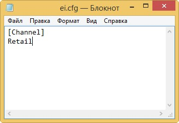
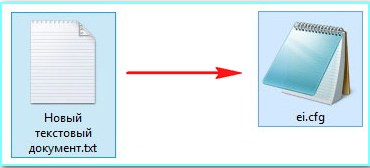
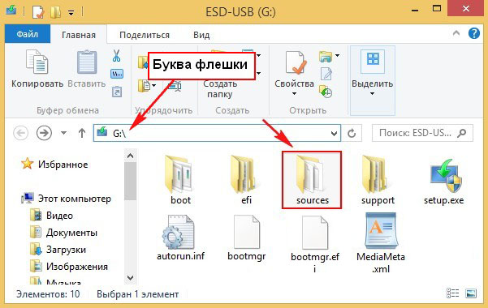

Создаём файл конфигурации выпуска Windows (EI.cfg).
Данный файл представляет из себя простой текстовый файл с названием EI и расширением .cfg. Создаём текстовый файл, открываем его и вводим:

затем сохраняем его как ei.cfg

Добавляем файл ei.cfg в дистрибутив Windows
